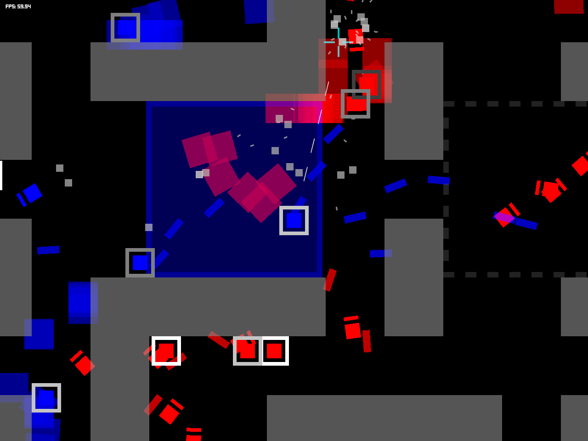

わちゃわちゃ系全方位シューティングゲーム Tofu on Fire

ゲーム概要
青チームと赤チームに分かれて撃ち合いをします。プレイヤーは青チームです。
豆腐（自機）を選び、敵を撃ちながらマップ中央付近にある豆腐エリアを目指します。
豆腐エリアに入ると相手側へ進むので、そのまま相手側の点線エリアまで進ませると勝利です。
操作方法
XInput対応コントローラー
- 左スティック: 移動
- 右スティック: 照準
- Rボタン: 発射
マウス＆キーボード
- WASDキー: 移動
- マウス移動: 照準
- クリック: 発射
ゲーム説明
ゲームを起動したときから戦いは始まっています。
ゲームを起動して何かボタンを押すと、豆腐選択画面になります。
豆腐によって撃てるショットが異なります。以下の3種類の豆腐から選択してください。
 MOMEN（木綿ミサイル）
MOMEN（木綿ミサイル）2回跳ね返る高火力・長射程ミサイル
選択すると突然ゲームが始まります。
AI操作の豆腐とともに，赤い敵弾を避け、赤い豆腐（？）をショットで倒しましょう。
敵弾を食らうと体力が減っていきます。
体力がゼロになると、豆腐のかけらを撒き散らしながら爆発四散してしまいます。
豆腐のかけらを取ると体力を回復することができます。
倒されてしまっても、豆腐選択画面になって再び出撃することができます。
復活する回数に制限はありません。
また、マップの中央付近には半透明の四角い「豆腐エリア」があります。
豆腐エリアに豆腐が入ると色が変わり、相手側の点線エリアに向かって動き出します。
豆腐エリアを進め、相手の点線エリアへ持っていくことができると勝利となります。

相手側の点線エリア付近ではなかなか豆腐エリアを進めることができませんが、 なるべく倒されないようにしながら続けて敵を倒すことで、 豆腐の侵攻を一気に進められるようになります。
動作環境
Windows 10 64-bit で動作を確認しております。
32-bit環境では動作しませんのでご了承ください。
ウィンドウの大きさは標準では1280x960となっていますが、 これはconfig.txtの中身を弄ることで変更可能です。
その他
- XInputコン操作では、右スティックとRボタンを使う代わりに、 Aボタンで発射・Bボタンで射撃方向固定という操作方法もあります。が…（微妙）
- KINU豆腐のみ移動が若干速いです。
- 油揚げは豆腐ではない、それはそう
- 豆腐エリアとは結局何なのだろうか
- そもそもなぜ豆腐なのか、それは誰にもわからない
- 📛
作者
rekz - Program, Graphic, Sound, etc.